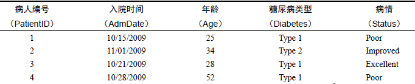

# 把一个数字存储到变量my_integer中
my_integer <- 5
# 查看数据类型
typeof(my_integer)
## [1] "double"
# 把一个小数存储到变量my_float中
my_float <- 3.14
typeof(my_float) # 查看数据类型
## [1] "double"6 数据类型
这部分内容是R语言基础中的基础，不过非常简单，也很好理解。
医学统计学中会把数据分为计量资料、计数资料、等级资料等不同的类型，R语言中也有类似的分类。
R中的数据类型主要有以下几类：
- 双精度型（double）
- 整数型（integer）
- 字符型（character）
- 逻辑型（logical）
- 复数型（complex）
- 原生型（raw）
其中常见的是前4种，后两种少见，对于初学者不需要了解。
6.1 双精度型
其实就是小数型：
虽然数字5没有小数点，但是它此时依然是double类型。
6.2 整数型
整数型也是表示数字的，没有小数点，但是需要在结尾添加L才行：
integer_variable <- 186L
typeof((integer_variable))
## [1] "integer"其中double和integer被统称为数值型（numeric）。
6.3 字符型
是表示文本的一种方式，通常用引号引起来的都是字符型，双引号或者单引号都可以，但必须是英文状态下的引号：
# 把一段文字存储到变量中
my_string <- "Hello, R!"
# 打印结果
print(my_string)
## [1] "Hello, R!"
# 查看类型
typeof(my_string)
## [1] "character"6.4 逻辑型
又称为布尔型（boolean），用来表示是或否，只能是TRUE（是）或FALSE（否），而且不能加引号，加了引号就变成字符型了，TRUE可以简写为T，FALSE可以简写为F。
# 把一个逻辑值存储到变量中
my_logical <- TRUE
typeof(my_logical)
## [1] "logical"逻辑值是可以运算的，高中都学过的：
TRUE + TRUE
TRUE - TRUE
...逻辑运算：
TRUE + TRUE # 当成加减运算时，TRUE是1，FALSE是0！
## [1] 2
TRUE - FALSE
## [1] 1还有一些逻辑运算符：与，或，非
与：&
或：|
非：!
等于：==
不等于：!= # 少用
大于：>
大于等于：<=
小于：<
小于等于：<=TRUE | FALSE
## [1] TRUE
TRUE & FALSE
## [1] FALSE6.5 类型判断
is.numeric() # 是不是数值型
is.character() # 是不是字符型
is.double() # 是不是双精度型
is.integer() # 是不是整数型
#is.factor() # 是不是因子型
is.complex() # 是不是复数性
is.logical() # 是不是逻辑型6.6 数据集
数据集通常是由不同类型的数据构成的一个矩形格式，每一行表示一个观测（observation），每一列表示一个变量（variable），我们用的最多的数据集是表格型（tabular）的结构，下表是一个医学中常见的病例数据集演示：

不同的行业对于数据集的行和列叫法不同。统计学家称它们为观测（observation）和变量（variable），数据库分析师则称其为记录（record）和字段（field），数据挖掘和机器学习的研究者则把它们叫作示例（example）和属性（attribute）。
在上表所示的数据集中，PatientID是行标识符（row-identifier）（或者叫“行名”），行名是不能有重复的；AdmDate是日期型变量，Age是连续型变量，Diabetes是名义型变量，Status是有序型变量。
R中有许多用于存储数据的结构，包括标量、向量、数组、数据框和列表等。上表的结构实际上是R中的数据框（data.frame）。多样化的数据结构赋予了R极其灵活的数据处理能力。
在上表中，AdmDate和Age为数值型（numeric）变量，而Diabetes和Status则为字符型（character）变量。R将实例标识符称为rowmames（行名），将类别型（包括名义型和有序型）变量称为因子（factors）。我们会在下一章中讲解这些内容。